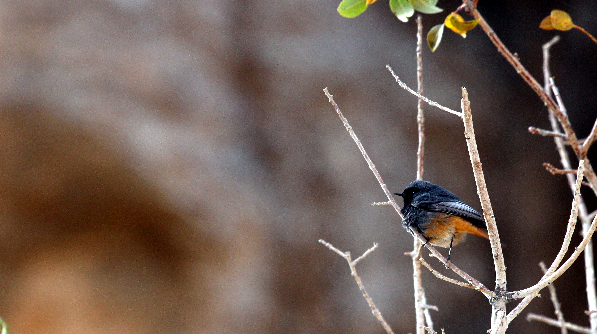

A rusty tail quivers above a rock or old wall, followed by a short flight to the ground and a return to the perch. This movement may draw attention to a Black Redstart before its colours become clear. Its Arab-world distribution stretches from Morocco to the Levant and the Arabian Peninsula, but its relationship with these regions varies: some populations breed locally, while others pass through or spend the winter away from their nesting areas.
Species profile
- Arabic names: الحميراء السوداء; also الحميراء الدبساء
- English name: Black Redstart
- French name: Rougequeue noir
- Scientific name: Phoenicurus ochruros
- Family: Old World flycatchers and chats, Muscicapidae
- Length: approximately 14–15 cm
- Range: extensive parts of Europe, Asia and North Africa, with geographically and seasonally varied occurrence in the Arab world
- Main Arab examples: Morocco, the Levant, Egypt and countries of the Gulf and Arabian Peninsula
- Residency and migration: resident breeder in some areas; passage migrant or winter visitor in others
- Global conservation status: Least Concern (LC)
- Legal status: determined by the country and its applicable rules and decisions; global conservation status does not confer hunting permission
From Morocco to the Arabian Peninsula
Morocco supports local breeding populations of Black Redstart, with some mountain birds moving to lower elevations in winter. Morocco and Algeria also receive birds from Europe. Local birds may therefore occur alongside migrants in the same season; seeing this species in winter does not mean that every individual has travelled from a distant country.
In the eastern Arab region, the picture differs between countries and among populations within a country. Lebanon's bird guide records resident breeders alongside passage migrants and winter visitors. Syria also has resident and passage populations, whereas passage and non-breeding occurrence are prominent in Jordan. Migrants also reach Egypt.
On the Arabian Peninsula, passage and winter occurrence are especially clear in examples such as Qatar and the United Arab Emirates. The species has the same recorded status in King Salman bin Abdulaziz Royal Nature Reserve in northern Saudi Arabia, while Oman is included in its passage and non-breeding range.
What autumn means for this bird
Autumn can bring two overlapping movements: arrivals from breeding areas and the descent of some local mountain birds. European ringing data show movement towards wintering grounds beginning in September, with arrivals continuing through October and November. This describes the studied populations; it is not one arrival calendar for the whole Arab world.
A local comparison illustrates the difference. Lebanon's usual autumn passage runs from mid-October to early December. In the UAE, regular occurrence is concentrated between late October and March, with records outside that window. October may therefore be an active passage month at one site and the lead-in to a more conspicuous season at another.
An observation becomes more useful when its date, location, elevation and habitat are recorded, rather than simply announcing that a “winter bird” has arrived. Plumage alone does not reveal an individual's country of origin or entire route. A ringing record linked to a documented subsequent encounter can establish some points in an individual’s movement; reconstructing its route requires suitable tracking data.
One rusty tail, several appearances
The rusty tail is useful but insufficient: Common Redstart, Phoenicurus phoenicurus, shares that feature. Females and young birds may look grey-brown, unlike the dark adult male repeatedly illustrated in guides. Look at the face, breast, underparts and wing as well as the tail.
Male Black Redstarts also vary among populations. Western birds may be charcoal-coloured with a pale wing panel, while eastern populations can have more conspicuously rusty underparts. This matters when comparing an Arab-world bird with a single European photograph. A male's lack of a prominent white forehead, together with black extending onto the lower breast in some forms, helps distinguish it from Common Redstart. Females require closer assessment of several features.
From rocks to villages and towns
Black Redstarts are strongly associated with rocky ground and sparsely vegetated slopes. Walls, ledges and roofs offer some of the same features: an elevated lookout, sheltered spaces for hiding or nesting, and open ground for finding prey. Birds may therefore occur near buildings without depending on food supplied by people.
Watch the movement between perch and ground: a short pause, a dash after small prey, then a return to a higher position. This behaviour reveals the importance of a small patch combining food and shelter, whether at a mountain's foot or beside a building. In towns, sealing cavities during renovation can remove nesting places used by the species.
Small prey and a sheltered nest
Insects and other small invertebrates form the basis of its diet, collected from the ground or during short sallies. It may also eat small fruits. The bird belongs to a food web linking plants, invertebrates and birds.
It builds a nest from plant material in a protected place, such as a rock crevice or a gap in a building. A typical clutch contains four to six eggs, incubated by the female. Nesting dates depend on location and population. A bird seen beside a house in autumn is not necessarily preparing to breed there.
Conservation and responsible observation
Least Concern describes global extinction risk. It does not establish that every local population is doing well, or determine hunting law in any country. Legal status should be checked with the competent national authority, including protected-area rules and seasonal decisions. A game list or legal exception from one Arab country cannot simply be applied in another.
Leave enough space for the bird to continue feeding, and avoid following it to a nest or disturbing it for a closer photograph. Record behaviour and habitat, with a clear side-on image if possible. Such details can turn a brief tail movement into a useful observation of birds across the Arab world's different environments.
Photo credit: Greg Schechter — Wikimedia Commons — CC BY 2.0.
.jpg){kind=link}